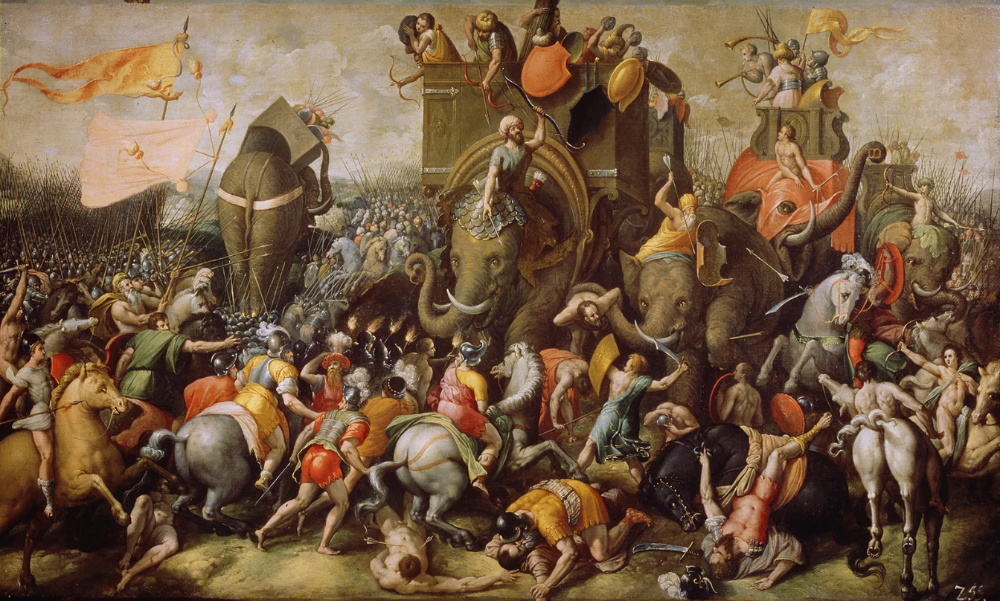

Zama Savaşı
Zama Savaşı, (MÖ 202), Yaşlı Scipio Africanus liderliğindeki Romalıların Hannibal komutasındaki Kartacalılara karşı kazandığı zaferdir. İkinci Pön Savaşı’nın son ve belirleyici muharebesi olan bu savaş, hem Hannibal’ın Kartaca kuvvetlerine komuta etmesini hem de Kartaca’nın Roma’ya önemli ölçüde karşı koyma şansını etkili bir şekilde sona erdirmiştir. Savaş, Romalı tarihçi Livy tarafından Naraggara (günümüzde Sāqiyat Sīdī Yūsuf, Tunus) olarak tanımlanan yerde gerçekleşmiştir. Zama adı, savaştan yaklaşık 150 yıl sonra Romalı tarihçi Cornelius Nepos tarafından (modern tarihçilerin hiçbir zaman tam olarak tanımlayamadığı) bölgeye verilmiştir.

203 yılına gelindiğinde Kartaca, Afrika’yı işgal eden ve Kartaca’nın ancak 20 mil (32 km) batısında önemli bir savaş kazanan Romalı general Publius Cornelius Scipio’nun güçlerinin saldırısına uğrama tehlikesiyle karşı karşıyaydı. Bunun üzerine Kartacalı generaller Hannibal ve kardeşi Mago İtalya’daki seferlerinden geri çağrıldılar. Hannibal 12.000 kişilik tecrübeli ordusuyla Afrika’ya döndü ve kısa süre içinde Kartaca’ya yaklaşanları savunmak için toplam 37.000 asker topladı. Ligurya ‘da ( Cenova yakınlarında) kaybedilen bir çarpışma sırasında savaş yaraları almış olan Mago, geçiş sırasında denizde öldü.
Scipio ise Bagradas(Majardah) Nehri’nden Kartaca’ya doğru ilerleyerek Kartacalılarla kesin bir savaş yapmak istiyordu. Scipio’nun Roma kuvvetlerinin bir kısmı Cannae ‘den gelen ve o utanç verici yenilgiden kurtulmaya çalışan gazilerden oluşuyordu. Müttefikleri geldiğinde, Scipio’nun yaklaşık olarak
Hannibal (yaklaşık 40.000 kişi), ancak Numidyalı hükümdar Masinissa ve Romalı general Gaius Laelius tarafından yönetilen 6.100 süvarisi, hem eğitim hem de sayı bakımından Kartacalı süvarilerden üstündü. Hannibal atlarının çoğunu İtalya’dan nakledemediği için, Romalıların eline geçmelerini önlemek amacıyla onları katletmek zorunda kaldı. Böylece, büyük kısmı Tychaeus adlı küçük bir Numidyalı müttefikinden olmak üzere sadece 4.000 süvari çıkarabildi.
Hannibal, Masinissa’nın Scipio’ya katılmasını engellemek için çok geç geldi ve Scipio’yu savaş alanını seçebilecek bir konumda bıraktı. Bu, Hannibal’ın süvari üstünlüğünü elinde tuttuğu ve genellikle savaş alanını seçtiği İtalya’daki durumun tersine dönmesiydi. Hannibal tam olarak eğitilmemiş 80 savaş fili kullanmanın yanı sıra, savaş deneyimi olmayan Kartacalı acemi askerlerden oluşan bir orduya da güvenmek zorunda kalmıştı. Üç muharebe hattından sadece İtalya’dan gelen tecrübeli gazileri (12.000 ila 15.000 kişi arasında) Romalılarla savaşmaya alışkındı; bunlar düzeninin arkasında konumlanmışlardı.
Savaştan önce Hannibal ve Scipio şahsen görüştüler, muhtemelen Hannibal savaş koşullarının kendi lehine olmadığını düşündüğü için cömert bir anlaşma yapmayı umuyordu. Scipio, Hannibal ile görüşmeyi merak etmiş olabilir, ancak Kartaca’nın ateşkesi bozduğunu ve sonuçlarına katlanmak zorunda kalacağını belirterek önerilen şartları reddetti. Livy’ye göre Hannibal Scipio’ya “Ben yıllar önce Trasimene ve Cannae’de neysem, sen de bugün öylesin” demiştir. Scipio’nun Kartaca’ya bir mesajla karşılık verdiği söylenir: “Savaşmaya hazırlanın çünkü barışı tahammül edilemez bulduğunuz aşikâr.” Ertesi gün savaş için ayarlandı.
İki ordu birbirine yaklaşırken, Kartacalılar 80 fillerini Roma piyadelerinin saflarına saldılar, ancak büyük hayvanlar kısa sürede dağıldı ve tehditleri etkisiz hale getirildi. Fil hücumunun başarısızlığı muhtemelen üç faktörle açıklanabilir; bunlardan ilk ikisi iyi belgelenmiş ve en önemlileridir. Birincisi, filler iyi eğitilmemişti. İkincisi ve belki de sonuç açısından daha da hayati olanı, Scipio kuvvetlerini aralarında geniş geçitler bulunan maniple’ler (küçük, esnek piyade birlikleri) halinde düzenlemişti. Adamlarını filler hücum ettiğinde kenara çekilecek, kalkanlarını kilitleyecek ve filler geçerken geçitlere bakacak şekilde eğitmişti. Bu da fillerin çok az bir çatışmaya girerek hat boyunca engelsiz bir şekilde ilerlemesine neden oldu. Üçüncüsü, Romalıların yüksek sesle bağırması ve borazanlarını çalması fillerin dikkatini dağıtmış olabilir; bu fillerden bazıları savaşın başlarında kenara çekilip kendi piyadelerine saldırarak Hannibal’ın askerlerinin ön saflarında kaosa neden oldu.
Scipio’nun süvarileri daha sonra rakip Kartacalı süvarilere kanatlardan saldırdı; Kartacalılar kaçtı ve Masinissa’nın kuvvetleri tarafından takip edildi. Daha sonra Roma piyade lejyonları ilerledi ve Hannibal’ın birbirini izleyen üç savunma hattından oluşan piyadelerine saldırdı. Romalılar ilk hattın askerlerini ve ardından ikinci hattın askerlerini ezdiler. Ancak o zamana kadar lejyonerler neredeyse tükenmişti ve Hannibal’ın İtalya seferindeki gazilerinden (yani en iyi birliklerinden) oluşan üçüncü hatta henüz yaklaşamamışlardı. Bu kritik noktada, Masinissa’nın Numidyalı süvarileri düşman süvarilerini bozguna uğrattıktan sonra geri dönüp Kartacalı piyadelerin arkasına saldırdı ve kısa süre sonra birleşik Roma piyadeleri ile süvari saldırısı arasında ezildiler. Savaşta yaklaşık 20.000 Kartacalı öldü ve belki de 20.000’i esir alındı, Romalılar ise yaklaşık 1.500 ölü verdi. Yunan tarihçi Polybius, Hannibal’ın savaşta bir general olarak elinden geleni yaptığını, özellikle de rakibinin sahip olduğu avantajı göz önünde bulundurduğunu belirtir. Ancak Hannibal’ın zayıf bir pozisyonda savaşıyor olması Scipio’nun Roma için kazandığı zaferi hiçbir şekilde azaltmaz. Kartaca ve Hannibal’ın yenilgisiyle birlikte, Zama’nın Roma’da Akdeniz’de kendisi için daha büyük bir gelecek vizyonu uyandırmış olması muhtemeldir.
Zama Savaşı Kartaca’yı çaresiz bıraktı ve şehir Scipio’nun barış şartlarını kabul ederek İspanya’yı Roma’ya bıraktı, savaş gemilerinin çoğunu teslim etti ve Roma’ya 50 yıllık bir tazminat ödemeye başladı. Scipio’ya zaferinin anısına Africanus soyadı verildi. Hannibal savaştan kaçtı ve Kartaca’ya dönmeden önce bir süre doğuda Hadrumetum yakınlarındaki mülklerine gitti. Hannibal on yıllar sonra ilk kez askeri komutadan yoksundu ve bir daha asla Kartacalılara savaşta liderlik etmedi. Roma’nın Kartaca’dan talep ettiği tazminat 10.000 gümüş talanttı ve Birinci Pön Savaşı’nın sonunda talep edilen tazminatın üç katından fazlaydı. Kartacalılar en az 100 gemiyi alenen yakmak zorunda kalsa da, Scipio Hannibal’ın kendisine ağır şartlar dayatmadı ve Hannibal kısa süre sonra mağlup Kartaca’nın yönetimine yardımcı olmak için halk oylamasıyla suffete (sivil yargıç) olarak seçildi.
İkinci Pön Savaşı’nı kesin bir Roma zaferiyle sonuçlandıran Zama Muharebesi, antik tarihin en önemli savaşlarından biri olarak kabul edilmelidir. Afrika’da başarılı bir istila gerçekleştiren ve en zorlu düşmanını yenen Roma, Akdeniz imparatorluğu vizyonuna başlamıştır.